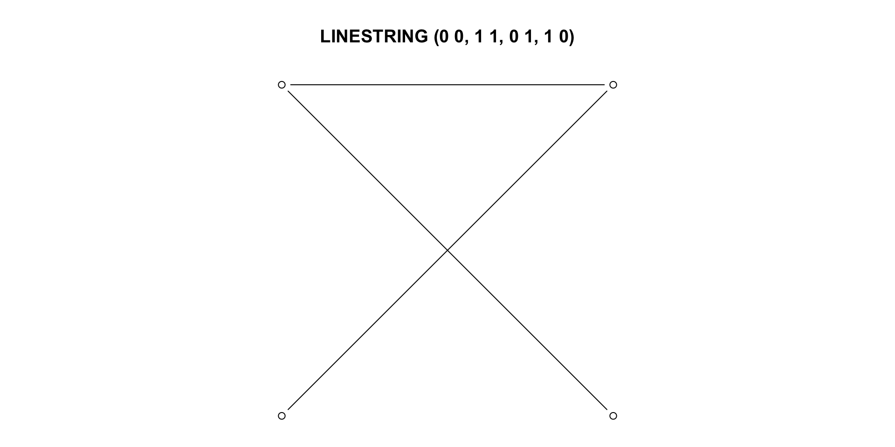
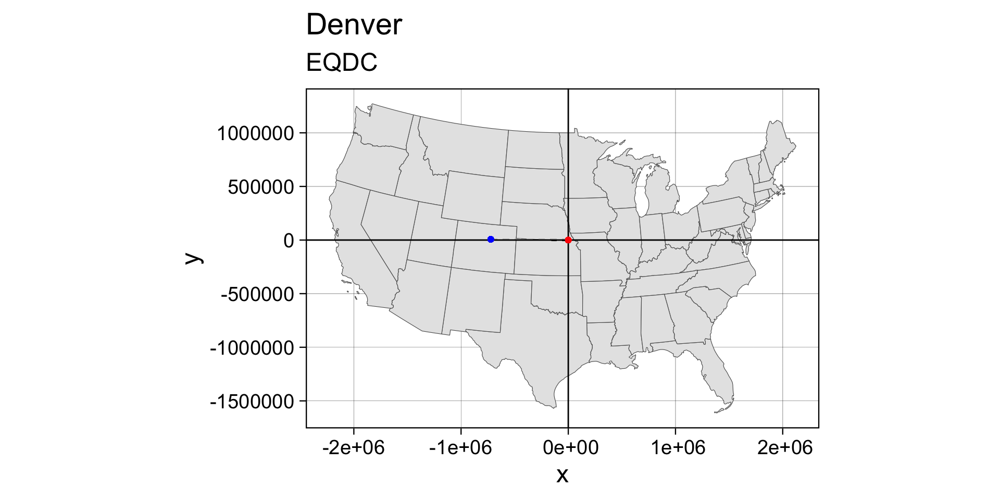

#> Simple feature collection with 64 features and 4 fields
#> Geometry type: MULTIPOLYGON
#> Dimension: XY
#> Bounding box: xmin: -109.0602 ymin: 36.99246 xmax: -102.0415 ymax: 41.00342
#> Geodetic CRS: WGS 84
#> First 10 features:
#> geoid name aland state_nm geometry
#> 1 08001 Adams 3021840487 Colorado MULTIPOLYGON (((-105.0532 3...
#> 2 08003 Alamosa 1871643028 Colorado MULTIPOLYGON (((-105.4855 3...
#> 3 08005 Arapahoe 2066438714 Colorado MULTIPOLYGON (((-103.7065 3...
#> 4 08007 Archuleta 3496712164 Colorado MULTIPOLYGON (((-107.1287 3...
#> 5 08009 Baca 6617400567 Colorado MULTIPOLYGON (((-102.0416 3...
#> 6 08011 Bent 3918255148 Colorado MULTIPOLYGON (((-102.7476 3...
#> 7 08013 Boulder 1881325109 Colorado MULTIPOLYGON (((-105.3978 3...
#> 8 08014 Broomfield 85386685 Colorado MULTIPOLYGON (((-105.1092 3...
#> 9 08015 Chaffee 2624715692 Colorado MULTIPOLYGON (((-105.9698 3...
#> 10 08017 Cheyenne 4605713960 Colorado MULTIPOLYGON (((-103.1729 3...Week 2
Features, Projections & Measures
Simple Features

Todays Data: Colorado Counties!
Simple Features
Simple feature geometries describe the geometries of
features.The main application of simple feature geometries is to describe 2D geometries as
points,lines, orpolygons.“simple” refers to the fact that line or polygon geometries are represented by set of points connected with straight lines.
Simple features access is a standard (Herring 2011, Herring (2010), ISO (2004)) for describing simple feature geometries via:
a class hierarchy
a set of operations
binary and text encodings
Simple Features Access
Simple features or simple feature access refers to the formal standard (ISO 19125-1:2004) describing how objects in the real world can be represented in computers, with emphasis on the spatial geometry of these objects.
It also describes how objects can be stored in and retrieved from databases, and which geometrical operations should/can be defined for them.
The standard is widely implemented in spatial databases (such as PostGIS), commercial GIS (e.g., ESRI ArcGIS) and forms the vector data basis for libraries such as GDAL.
A subset of simple features (e.g. the big 7) forms the GeoJSON specification.
R has well-supported classes for storing spatial data (sp) and interfacing to the above mentioned environments (rgdal, rgeos), but has so far lacked a complete implementation of simple features, making conversions at times convoluted, inefficient or incomplete.
So what is a feature?
A feature is a thing (object) in the real world, such as a building or a river
They often consist of other objects.
A river system can be a feature, a river can be a feature, a river outlet can be a feature.
A image pixel can be a feature, and the image can be a feature…
Spatial Features
The standard says: “A simple feature is defined by the OpenGIS Abstract specification to have both spatial and non-spatial attributes. Spatial attributes are geometry valued, and simple features are based on 2D geometry with linear interpolation between vertices.” - standard.
Spatial Features have a geometry describing where the feature is located and how it is represented.
The geometry of a river can be its watershed, of its mainstem, or the point it drains to (see the OGC HY_Feature standard)
Features can have attributes describing other properties of the feature
Geometry types
The following 7 simple feature types are the most common, and are the only ones used for GeoJSON:
| SINGLE | Description |
|---|---|
POINT |
zero-dimensional geometry containing a single point |
LINESTRING |
sequence of points connected by straight, non-self intersecting line pieces; one-dimensional geometry |
POLYGON |
geometry with a positive area (two-dimensional); sequence of points form a closed, non-self intersecting ring; the first ring denotes the exterior ring, zero or more subsequent rings denote holes in this exterior ring |
| MULTI (same typed) | Description |
|---|---|
MULTIPOINT |
set of points; a MULTIPOINT is simple if no two Points in the MULTIPOINT are equal |
MULTILINESTRING |
set of linestrings |
MULTIPOLYGON |
set of polygons |
| Multi-Typed | Description |
|---|---|
GEOMETRYCOLLECTION |
set of geometries of any type except GEOMETRYCOLLECTION |
- The descriptions above were copied from the PostGIS manual.
The remaining geometries 10 are rarer, but increasingly find implementations:
| type | description |
|---|---|
CIRCULARSTRING |
The CIRCULARSTRING is the basic curve type, similar to a LINESTRING in the linear world. A single segment requires three points, the start and end points (first and third) and any other point on the arc. The exception to this is for a closed circle, where the start and end points are the same. In this case the second point MUST be the center of the arc, i.e., the opposite side of the circle. To chain arcs together, the last point of the previous arc becomes the first point of the next arc, just like in LINESTRING. This means that a valid circular string must have an odd number of points greater than 1. |
COMPOUNDCURVE |
A compound curve is a single, continuous curve that has both curved (circular) segments and linear segments. That means that in addition to having well-formed components, the end point of every component (except the last) must be coincident with the start point of the following component. |
CURVEPOLYGON |
Example compound curve in a curve polygon: CURVEPOLYGON(COMPOUNDCURVE(CIRCULARSTRING(0 0,2 0, 2 1, 2 3, 4 3),(4 3, 4 5, 1 4, 0 0)), CIRCULARSTRING(1.7 1, 1.4 0.4, 1.6 0.4, 1.6 0.5, 1.7 1) ) |
MULTICURVE |
A MultiCurve is a 1-dimensional GeometryCollection whose elements are Curves, it can include linear strings, circular strings or compound strings. |
MULTISURFACE |
A MultiSurface is a 2-dimensional GeometryCollection whose elements are Surfaces, all using coordinates from the same coordinate reference system. |
CURVE |
A Curve is a 1-dimensional geometric object usually stored as a sequence of Points, with the subtype of Curve specifying the form of the interpolation between Points |
SURFACE |
A Surface is a 2-dimensional geometric object |
POLYHEDRALSURFACE |
A PolyhedralSurface is a contiguous collection of polygons, which share common boundary segments |
TIN |
A TIN (triangulated irregular network) is a PolyhedralSurface consisting only of Triangle patches. |
TRIANGLE |
A Triangle is a polygon with 3 distinct, non-collinear vertices and no interior boundary |
Dimensions
All geometries are composed of points
Points are defined by coordinates in a 2-, 3- or 4-D space.
In addition to XY coordinates, there are two optional dimensions:
a Z coordinate, denoting altitude
an M coordinate (rarely used), denoting some measure
The
Mdescribes a property of the vertex that is independent of the feature.It sounds attractive to encode a time as M, however these quickly become invalid once the path self-intersects.
Both Z and M are found relatively rarely, and software support to do something useful with them is rarer still.
Valid geometries
Valid geometries obey the following properties:
LINESTRINGSshall not self-intersectPOLYGONrings shall be closed (last point = first point)POLYGONholes (inner rings) shall be inside their exterior ringPOLYGONinner rings shall maximally touch the exterior ring in single points, not over a linePOLYGONrings shall not repeat their own path
If any of the above is not the case, the geometry is not valid.
Non-simple and non-valid geometries
st_is_simpleandst_is_validprovide methods to help detect non-simple and non-valid geometries:An example of a non-simple geometries is a self-intersecting lines
An example of a non-valid geometry are would be a polygon with slivers or self-intersections.

Empty Geometries
An important concept in the feature geometry framework is the
emptygeometry.emptygeometries serve similar purposes as NA values in vectors (placeholder)Empty geometries arise naturally from geometrical operations, for instance:
It is not entirely clear what the benefit is of having
typedempty geometries, but according to the simple feature standard they are type so thesfpackage abides by that.Empty geometries can be detected by:
So:
- There are 17 typed geometries supported by the simple feature standard
- All geometries are made up of points
- points can exist in 2,3,4 Dinimsonal space
LINESTRINGandPOLYGONgeometries have rules that define validity- Geometries can be empty (but are still typed)
Well-known Text, Well-known Binary
WKT and WKB
The simple feature standard includes two encodings: Well-known text (WKT) & well-known binary (WKB)
Well Known Textis human-readable:
In this example, the word
LINESTRINGprovides the geometry type which is followed by a parentheses, inside the parentheses are thepointsthat make up the geometry.Separate points are separated by a “comma”, while the point coordinates are separated by a “space.”
Coordinates are usually floating point numbers, and moving large amounts of information as text is slow and imprecise.
- For that reason, we use well-known binary (WKB) encoding
x
#> LINESTRING (10 5, 9 4, 8 3, 7 2, 6 1)
st_as_binary(x)
#> [1] 01 02 00 00 00 05 00 00 00 00 00 00 00 00 00 24 40 00 00 00 00 00 00 14 40
#> [26] 00 00 00 00 00 00 22 40 00 00 00 00 00 00 10 40 00 00 00 00 00 00 20 40 00
#> [51] 00 00 00 00 00 08 40 00 00 00 00 00 00 1c 40 00 00 00 00 00 00 00 40 00 00
#> [76] 00 00 00 00 18 40 00 00 00 00 00 00 f0 3fBinary conversion is used to communicate geometries to external libraries (GDAL, GEOS, liblwgeom) and spatial databases because it is fast and lossless.
WKT and WKB can both be transformed back into R native objects by
- Conversion between R native objects and WKB is done by package
sfin compiled (C++/Rcpp) code, making this a reusable and fast route for I/O of simple feature geometries in R.
How simple features are organized in R?
Simple Features is a standard that is implemented in R (not limited to R)
So far we have discusses simple features the standard, rather then simple features the implementation
In R, simple features are implemented using standard data structures (S3 classes, lists, matrix, vector).
Attributes are stored in
data.frames(ortbl_df)Feature geometries are stored in a
data.framecolumn.Since geometries are not single-valued, they are put in a
list-columnThis means each observation (element) is a list itself!
sfg –> sfc –> sf
sf, sfc, sfg
The three classes are used to represent simple feature obejcts are:
sf: data.frame with feature attributes and geometries
which is contains an:
sfc: the list-column with the geometries for each feature
which is composed of:
sfg, individual simple feature geometries
sf, sfc, sfg

In the output we see:
in green a simple feature: a single record (row, consisting of attributes and geometry
in blue a single simple feature geometry (an object of class
sfg)in red a simple feature list-column (an object of class
sfc, which is a column in thedata.frame)Even though geometries are native R objects, they are printed as well-known text
sfg: simple feature geometry (blue)
Simple feature geometry (
sfg) objects carry the geometry for a single featureSimple feature geometries are implemented as R native data, using the following rules
a single POINT is a numeric vector
a set of points (e.g. in a LINESTRING or ring of a POLYGON) is a
matrix, each row containing a pointany other set is a
list
- list of numeric matrices for
MULTILINESTRINGandPOLYGON - list of lists of numeric matrices for
MULTIPOLYGON - list of (typed) geometries for
GEOMETRYCOLLECTION
sfg: simple feature geometry
Creator functions are rarely used in practice, since we typically read existing spatial data. But, they are useful for illustration:
sfg: simple feature geometry
All geometry objects have a S3 class indicating their (1) dimension, (2) type, and (3) superclass
sfg: simple feature geometry
(m1 = rbind(c(8, 1), c(2, 5), c(3, 2)))
#> [,1] [,2]
#> [1,] 8 1
#> [2,] 2 5
#> [3,] 3 2
(mp = st_multipoint(m1))
#> MULTIPOINT ((8 1), (2 5), (3 2))
attributes(mp)
#> $dim
#> [1] 3 2
#>
#> $class
#> [1] "XY" "MULTIPOINT" "sfg"
(ls = st_linestring(m1))
#> LINESTRING (8 1, 2 5, 3 2)
attributes(ls)
#> $dim
#> [1] 3 2
#>
#> $class
#> [1] "XY" "LINESTRING" "sfg"sfg: simple feature geometry
Although these geometries contain the same points (m1), they have entirely different meaning: the point set is a zero-dimensional, the line a one-dimensional geometry:
Here, dimensions is not the XY vs XYZ, but rather whether the geometry has length (1D) or area (2D) or greater…
Mixed geometries
Sets of simple features also consist of features with heterogeneous geometries. In this case, the geometry type of the set is GEOMETRY:
These set can be filtered by using st_is
or, when working with sf objects,
GEOMETRYCOLLECTION
Single features (1 geometry per row) can have a single geometry, that consists of several geometries of different types.
Such cases arise rather naturally when looking for intersections. For instance, the intersection of two LINESTRING geometries may be the combination of a
LINESTRINGand aPOINT.Putting this intersection into a single feature geometry needs a
GEOMETRYCOLLECTION
pt <- st_point(c(1, 0))
ls <- st_linestring(matrix(c(4, 3, 0, 0), ncol = 2))
poly1 <- st_polygon(list(matrix(c(5.5, 7, 7, 6, 5.5, 0, 0, -0.5, -0.5, 0), ncol = 2)))
poly2 <- st_polygon(list(matrix(c(6.6, 8, 8, 7, 6.6, 1, 1, 1.5, 1.5, 1), ncol = 2)))
multipoly <- st_multipolygon(list(poly1, poly2))
st_sfc(pt, ls, poly1, poly2, multipoly)
#> Geometry set for 5 features
#> Geometry type: GEOMETRY
#> Dimension: XY
#> Bounding box: xmin: 1 ymin: -0.5 xmax: 8 ymax: 1.5
#> CRS: NA
#> POINT (1 0)
#> LINESTRING (4 0, 3 0)
#> POLYGON ((5.5 0, 7 0, 7 -0.5, 6 -0.5, 5.5 0))
#> POLYGON ((6.6 1, 8 1, 8 1.5, 7 1.5, 6.6 1))
#> MULTIPOLYGON (((5.5 0, 7 0, 7 -0.5, 6 -0.5, 5.5...
(j <- st_geometrycollection(list(pt, ls, poly1, poly2, multipoly)))
#> GEOMETRYCOLLECTION (POINT (1 0), LINESTRING (4 0, 3 0), POLYGON ((5.5 0, 7 0, 7 -0.5, 6 -0.5, 5.5 0)), POLYGON ((6.6 1, 8 1, 8 1.5, 7 1.5, 6.6 1)), MULTIPOLYGON (((5.5 0, 7 0, 7 -0.5, 6 -0.5, 5.5 0)), ((6.6 1, 8 1, 8 1.5, 7 1.5, 6.6 1))))GEOMETRYCOLLECTION
- In case we end up with
GEOMETRYCOLLECTIONobjects, the next question is often what to do with them. One thing we can do is extract elements from them:
st_collection_extract(j, "POLYGON")
#> Geometry set for 3 features
#> Geometry type: MULTIPOLYGON
#> Dimension: XY
#> Bounding box: xmin: 5.5 ymin: -0.5 xmax: 8 ymax: 1.5
#> CRS: NA
#> MULTIPOLYGON (((5.5 0, 7 0, 7 -0.5, 6 -0.5, 5.5...
#> MULTIPOLYGON (((6.6 1, 8 1, 8 1.5, 7 1.5, 6.6 1)))
#> MULTIPOLYGON (((5.5 0, 7 0, 7 -0.5, 6 -0.5, 5.5...
st_collection_extract(j, "POINT")
#> POINT (1 0)
st_collection_extract(j, "LINESTRING")
#> LINESTRING (4 0, 3 0)Conversion between types
We can convert simple feature geometries using the st_cast generic (up to the extent that a conversion is feasible):
methods(st_cast)
#> [1] st_cast.CIRCULARSTRING* st_cast.COMPOUNDCURVE*
#> [3] st_cast.CURVE* st_cast.GEOMETRYCOLLECTION*
#> [5] st_cast.LINESTRING* st_cast.MULTICURVE*
#> [7] st_cast.MULTILINESTRING* st_cast.MULTIPOINT*
#> [9] st_cast.MULTIPOLYGON* st_cast.MULTISURFACE*
#> [11] st_cast.POINT* st_cast.POLYGON*
#> [13] st_cast.sf* st_cast.sfc*
#> [15] st_cast.sfc_CIRCULARSTRING*
#> see '?methods' for accessing help and source codeConversion between types
Lets take the Larimer County in our Colorado sf object:
(co1 = filter(co, name == "Larimer")$geometry)
#> Geometry set for 1 feature
#> Geometry type: MULTIPOLYGON
#> Dimension: XY
#> Bounding box: xmin: -106.1954 ymin: 40.25778 xmax: -104.9431 ymax: 40.99844
#> Geodetic CRS: WGS 84
#> MULTIPOLYGON (((-105.6533 40.26046, -105.6094 4...
(co_ls = st_cast(co1, "MULTILINESTRING"))
#> Geometry set for 1 feature
#> Geometry type: MULTILINESTRING
#> Dimension: XY
#> Bounding box: xmin: -106.1954 ymin: 40.25778 xmax: -104.9431 ymax: 40.99844
#> Geodetic CRS: WGS 84
#> MULTILINESTRING ((-105.6533 40.26046, -105.6094...
Conversion between types
It is often convenient to analyze the the points that make up a LINESTRING However …
does not do what we expect, because it will convert a single geometry into a new single geometry (one line to one point)
Instead, we must recognize that a collection of points is what defines a LINSETRING and a collection of POINTs, operating as a single unit, is a MULTIPOINT
If we really wanted the individual POINT geometries, we need to work with sets:
sfc: sets of geometries
sfprovides a dedicated class for handeling geometry sets, calledsfc(simple feature geometry list column).We can create such a list column with constructor function
st_sfc:
The default report from the print method for sfc gives
- the number of features geometries
- the feature geometry type (here: POINT)
- the feature geometry dimension (here: XY)
- the bounding box for the set
- the coordinate reference system for the set (epsg and proj4string)
- the first few geometries, as (abbreviated) WKT
In addition to a class, the sfc object has further attributes (remember S3 class!)
which are used to record for the whole set:
- a precision value
- the bounding box enclosing all geometries (for x and y)
- a coordinate reference system
- the number of empty geometries contained in the set
This means that all these properties are defined for the set (sfc), and not for geometries (sfg) individually.
sfc objects are lists with each entry being an sfg object:
and we will use these lists as list columns in data.frame or tibble objects to represent simple features with geometries in a list column.
Sets of geometries arise when we separate compound geometries:
Sets of geometries arise when we separate compound geometries:
Sets of geometries arise when we separate compound geometries:
Sets of geometries arise when we separate compound geometries:
Sets of geometries arise when we separate compound geometries:
On the last slide,
st_sfccreates a set of oneLINESTRING(p), with a size of 4.Going the other way around (from set to feature), we need to combine geometries:
Casting must be done the level of the feature
If we want to go from the 4 feature (p) object to a 1 feature LINESTRING, we must combine before casting …
Disolving Geometries
Combining geometries preserves their interior boundaries, unioning resolves/dissolves the internal boundaries:
(co_geom = co$geometry)
#> Geometry set for 64 features
#> Geometry type: MULTIPOLYGON
#> Dimension: XY
#> Bounding box: xmin: -109.0602 ymin: 36.99246 xmax: -102.0415 ymax: 41.00342
#> Geodetic CRS: WGS 84
#> First 5 geometries:
#> MULTIPOLYGON (((-105.0532 39.79106, -104.976 39...
#> MULTIPOLYGON (((-105.4855 37.5779, -105.4859 37...
#> MULTIPOLYGON (((-103.7065 39.73989, -103.7239 3...
#> MULTIPOLYGON (((-107.1287 37.42294, -107.2803 3...
#> MULTIPOLYGON (((-102.0416 37.64428, -102.0558 3...

sf: objects with simple features
Simple features geometries and feature attributes are put together in sf (simple feature) objects.
co
#> Simple feature collection with 64 features and 4 fields
#> Geometry type: MULTIPOLYGON
#> Dimension: XY
#> Bounding box: xmin: -109.0602 ymin: 36.99246 xmax: -102.0415 ymax: 41.00342
#> Geodetic CRS: WGS 84
#> First 10 features:
#> geoid name aland state_nm geometry
#> 1 08001 Adams 3021840487 Colorado MULTIPOLYGON (((-105.0532 3...
#> 2 08003 Alamosa 1871643028 Colorado MULTIPOLYGON (((-105.4855 3...
#> 3 08005 Arapahoe 2066438714 Colorado MULTIPOLYGON (((-103.7065 3...
#> 4 08007 Archuleta 3496712164 Colorado MULTIPOLYGON (((-107.1287 3...
#> 5 08009 Baca 6617400567 Colorado MULTIPOLYGON (((-102.0416 3...
#> 6 08011 Bent 3918255148 Colorado MULTIPOLYGON (((-102.7476 3...
#> 7 08013 Boulder 1881325109 Colorado MULTIPOLYGON (((-105.3978 3...
#> 8 08014 Broomfield 85386685 Colorado MULTIPOLYGON (((-105.1092 3...
#> 9 08015 Chaffee 2624715692 Colorado MULTIPOLYGON (((-105.9698 3...
#> 10 08017 Cheyenne 4605713960 Colorado MULTIPOLYGON (((-103.1729 3...This sf object is of class
meaning it extends data.frame, but with a single list-column with geometries, which is held in the column named:
sfc: simple feature geometry list-column
The column in the sf data.frame that contains the geometries is a list, of class sfc.
We can retrieve the geometry list-column as we would any data.frame column (e.g. co$geometry), or more generally with st_geometry:
(co_geom <- st_geometry(co))
#> Geometry set for 64 features
#> Geometry type: MULTIPOLYGON
#> Dimension: XY
#> Bounding box: xmin: -109.0602 ymin: 36.99246 xmax: -102.0415 ymax: 41.00342
#> Geodetic CRS: WGS 84
#> First 5 geometries:
#> MULTIPOLYGON (((-105.0532 39.79106, -104.976 39...
#> MULTIPOLYGON (((-105.4855 37.5779, -105.4859 37...
#> MULTIPOLYGON (((-103.7065 39.73989, -103.7239 3...
#> MULTIPOLYGON (((-107.1287 37.42294, -107.2803 3...
#> MULTIPOLYGON (((-102.0416 37.64428, -102.0558 3...Geometries are printed in abbreviated form, but we can view a complete geometry by selecting it:
co_geom[[1]]
#> MULTIPOLYGON (((-105.0532 39.79106, -104.976 39.79104, -104.9731 39.79242, -104.9716 39.79829, -104.9687 39.7984, -104.9689 39.79104, -104.9602 39.79102, -104.9554 39.79463, -104.9405 39.7946, -104.9405 39.791, -104.927 39.79105, -104.927 39.78378, -104.9034 39.78381, -104.9036 39.79839, -104.8845 39.79832, -104.8844 39.81282, -104.8661 39.81285, -104.866 39.79839, -104.8291 39.79806, -104.7909 39.79825, -104.7909 39.8418, -104.7623 39.84179, -104.7623 39.84539, -104.731 39.84519, -104.7304 39.89613, -104.7033 39.89595, -104.7032 39.90693, -104.6921 39.90685, -104.6921 39.91418, -104.6796 39.91402, -104.6797 39.90701, -104.6309 39.90664, -104.6309 39.89929, -104.5996 39.89904, -104.5998 39.88131, -104.6052 39.88135, -104.6053 39.87311, -104.6192 39.87322, -104.6198 39.82242, -104.6554 39.82261, -104.6554 39.813, -104.6662 39.81307, -104.6661 39.82279, -104.7625 39.82344, -104.7626 39.79843, -104.7344 39.79844, -104.7346 39.76918, -104.7646 39.76919, -104.7646 39.77157, -104.7722 39.7715, -104.7722 39.77641, -104.7816 39.77648, -104.7816 39.7728, -104.8282 39.77278, -104.8282 39.76916, -104.833 39.76918, -104.8376 39.76717, -104.8564 39.76858, -104.8563 39.75813, -104.8482 39.75642, -104.8469 39.75469, -104.8799 39.75473, -104.88 39.74744, -104.8847 39.74747, -104.8846 39.74016, -104.8217 39.74029, -104.7256 39.74027, -104.6783 39.74, -104.6603 39.74048, -104.6528 39.73978, -104.6304 39.7395, -104.6246 39.74008, -104.5589 39.73933, -104.5074 39.73825, -104.3919 39.73804, -104.3401 39.73825, -104.265 39.73888, -104.2095 39.73902, -104.1151 39.73977, -104.0407 39.73998, -103.9776 39.74027, -103.9655 39.74052, -103.9075 39.74065, -103.8661 39.74024, -103.8002 39.7402, -103.794 39.74005, -103.7239 39.73978, -103.7065 39.73989, -103.7066 39.76555, -103.7063 39.82855, -103.7063 39.889, -103.7061 39.90854, -103.7062 39.95888, -103.7057 39.98511, -103.7057 40.00137, -103.8677 40.0012, -103.9546 40.00113, -104.0371 40.00113, -104.1503 40.00086, -104.1693 40.00078, -104.2674 40.00092, -104.3015 40.00077, -104.4523 40.00062, -104.6019 40.00053, -104.6406 40.00057, -104.7885 40.00041, -104.9048 40.00032, -104.9614 40.00034, -104.9809 40.00032, -104.9877 39.98648, -104.9878 39.97575, -104.9944 39.9758, -104.9971 39.97215, -104.9881 39.97218, -104.9881 39.96847, -104.9972 39.96853, -104.9974 39.98121, -105.0158 39.98119, -105.0156 39.95519, -105.0171 39.95281, -105.0122 39.95045, -105.0063 39.95044, -105.0063 39.9468, -104.9972 39.94677, -104.9971 39.94324, -105.0157 39.94313, -105.0155 39.9214, -105.0344 39.9213, -105.0343 39.91418, -105.0529 39.91422, -105.0532 39.86362, -105.0532 39.79106)))The stickness of sfc column
- Geometry columns are “sticky” meaning they persist through data manipulation:
co |>
select(name) |>
slice(1:2)
#> Simple feature collection with 2 features and 1 field
#> Geometry type: MULTIPOLYGON
#> Dimension: XY
#> Bounding box: xmin: -106.0393 ymin: 37.3562 xmax: -103.7057 ymax: 40.00137
#> Geodetic CRS: WGS 84
#> name geometry
#> 1 Adams MULTIPOLYGON (((-105.0532 3...
#> 2 Alamosa MULTIPOLYGON (((-105.4855 3...- Dropping the geometry column requires dropping the geometry via
sf:
- Or cohersing the
sfobject to adata.frame:
The stickness of sfc column
- A simple features object (sf) is the connection of a
sfclist-column anddata.frameof attributes

- This binding is unique compared to other column bindings built with things like
dplyr::bind_cols()cbind()do.call(cbind, list())
Coordinate Systems
What makes spatial data spatial?
- What makes a feature geometry spatial is the reference system…
Reading and writing
As we’ve seen above, reading spatial data from an external file can be done via sf - reading data requires the “parser function” and the file path
#> Reading layer `co' from data source
#> `/Users/mikejohnson/github/csu-ess-523c/slides/data/co.shp'
#> using driver `ESRI Shapefile'
#> Simple feature collection with 64 features and 4 fields
#> Geometry type: MULTIPOLYGON
#> Dimension: XY
#> Bounding box: xmin: -109.0602 ymin: 36.99246 xmax: -102.0415 ymax: 41.00342
#> Geodetic CRS: WGS 84we can suppress the output by adding argument quiet=TRUE or by using the otherwise nearly identical but more quiet
Writing takes place in the same fashion, using st_write:
or its quiet alternative that silently overwrites existing files by default,
From Tables (e.g. CSV)
Spatial data can also be created from CSV and other flat files once it is in R:
(cities = readr::read_csv("../labs/data/uscities.csv") |>
select(city, state_name, county_name, population, lat, lng) )
#> # A tibble: 31,254 × 6
#> city state_name county_name population lat lng
#> <chr> <chr> <chr> <dbl> <dbl> <dbl>
#> 1 New York New York Queens 18832416 40.7 -73.9
#> 2 Los Angeles California Los Angeles 11885717 34.1 -118.
#> 3 Chicago Illinois Cook 8489066 41.8 -87.7
#> 4 Miami Florida Miami-Dade 6113982 25.8 -80.2
#> 5 Houston Texas Harris 6046392 29.8 -95.4
#> 6 Dallas Texas Dallas 5843632 32.8 -96.8
#> 7 Philadelphia Pennsylvania Philadelphia 5696588 40.0 -75.1
#> 8 Atlanta Georgia Fulton 5211164 33.8 -84.4
#> 9 Washington District of Columbia District of Columb… 5146120 38.9 -77.0
#> 10 Boston Massachusetts Suffolk 4355184 42.3 -71.1
#> # ℹ 31,244 more rowsTo do this, you must specify the X and the Y coordinate columns as well as a CRS:
- A typical lat/long CRS is EPSG:4326
(cities_sf = st_as_sf(cities, coords = c("lng", "lat"), crs = 4326))
#> Simple feature collection with 31254 features and 4 fields
#> Geometry type: POINT
#> Dimension: XY
#> Bounding box: xmin: -176.6295 ymin: 17.9559 xmax: 174.111 ymax: 71.2727
#> Geodetic CRS: WGS 84
#> # A tibble: 31,254 × 5
#> city state_name county_name population geometry
#> * <chr> <chr> <chr> <dbl> <POINT [°]>
#> 1 New York New York Queens 18832416 (-73.9249 40.6943)
#> 2 Los Angeles California Los Angeles 11885717 (-118.4068 34.1141)
#> 3 Chicago Illinois Cook 8489066 (-87.6866 41.8375)
#> 4 Miami Florida Miami-Dade 6113982 (-80.2101 25.784)
#> 5 Houston Texas Harris 6046392 (-95.3885 29.786)
#> 6 Dallas Texas Dallas 5843632 (-96.7667 32.7935)
#> 7 Philadelphia Pennsylvania Philadelph… 5696588 (-75.1339 40.0077)
#> 8 Atlanta Georgia Fulton 5211164 (-84.422 33.7628)
#> 9 Washington District of Co… District o… 5146120 (-77.0163 38.9047)
#> 10 Boston Massachusetts Suffolk 4355184 (-71.0852 42.3188)
#> # ℹ 31,244 more rowsData Manipulation
Since
sfobjects aredata.frames, ourdplyrverbs work!Lets find the most populous city in each Colorado county…
sf and dplyr
#> Simple feature collection with 31254 features and 4 fields
#> Geometry type: POINT
#> Dimension: XY
#> Bounding box: xmin: -176.6295 ymin: 17.9559 xmax: 174.111 ymax: 71.2727
#> Geodetic CRS: WGS 84
#> # A tibble: 31,254 × 5
#> city state_name county_name population geometry
#> * <chr> <chr> <chr> <dbl> <POINT [°]>
#> 1 New York New York Queens 18832416 (-73.9249 40.6943)
#> 2 Los Angeles California Los Angeles 11885717 (-118.4068 34.1141)
#> 3 Chicago Illinois Cook 8489066 (-87.6866 41.8375)
#> 4 Miami Florida Miami-Dade 6113982 (-80.2101 25.784)
#> 5 Houston Texas Harris 6046392 (-95.3885 29.786)
#> 6 Dallas Texas Dallas 5843632 (-96.7667 32.7935)
#> 7 Philadelphia Pennsylvania Philadelph… 5696588 (-75.1339 40.0077)
#> 8 Atlanta Georgia Fulton 5211164 (-84.422 33.7628)
#> 9 Washington District of Co… District o… 5146120 (-77.0163 38.9047)
#> 10 Boston Massachusetts Suffolk 4355184 (-71.0852 42.3188)
#> # ℹ 31,244 more rowssf and dplyr
#> Simple feature collection with 477 features and 4 fields
#> Geometry type: POINT
#> Dimension: XY
#> Bounding box: xmin: -109.0066 ymin: 37.0155 xmax: -102.0804 ymax: 40.9849
#> Geodetic CRS: WGS 84
#> # A tibble: 477 × 5
#> city state_name county_name population geometry
#> * <chr> <chr> <chr> <dbl> <POINT [°]>
#> 1 Denver Colorado Denver 2691349 (-104.8758 39.762)
#> 2 Colorado Springs Colorado El Paso 638421 (-104.7605 38.8674)
#> 3 Aurora Colorado Arapahoe 390201 (-104.7237 39.7083)
#> 4 Fort Collins Colorado Larimer 339256 (-105.0656 40.5477)
#> 5 Lakewood Colorado Jefferson 156309 (-105.1172 39.6977)
#> 6 Greeley Colorado Weld 143554 (-104.7706 40.4152)
#> 7 Thornton Colorado Adams 142878 (-104.9438 39.9197)
#> 8 Grand Junction Colorado Mesa 141008 (-108.5673 39.0877)
#> 9 Arvada Colorado Jefferson 122835 (-105.151 39.832)
#> 10 Boulder Colorado Boulder 120121 (-105.2524 40.0248)
#> # ℹ 467 more rowssf and dplyr
#> Simple feature collection with 477 features and 4 fields
#> Geometry type: POINT
#> Dimension: XY
#> Bounding box: xmin: -109.0066 ymin: 37.0155 xmax: -102.0804 ymax: 40.9849
#> Geodetic CRS: WGS 84
#> # A tibble: 477 × 5
#> # Groups: county_name [64]
#> city state_name county_name population geometry
#> <chr> <chr> <chr> <dbl> <POINT [°]>
#> 1 Denver Colorado Denver 2691349 (-104.8758 39.762)
#> 2 Colorado Springs Colorado El Paso 638421 (-104.7605 38.8674)
#> 3 Aurora Colorado Arapahoe 390201 (-104.7237 39.7083)
#> 4 Fort Collins Colorado Larimer 339256 (-105.0656 40.5477)
#> 5 Lakewood Colorado Jefferson 156309 (-105.1172 39.6977)
#> 6 Greeley Colorado Weld 143554 (-104.7706 40.4152)
#> 7 Thornton Colorado Adams 142878 (-104.9438 39.9197)
#> 8 Grand Junction Colorado Mesa 141008 (-108.5673 39.0877)
#> 9 Arvada Colorado Jefferson 122835 (-105.151 39.832)
#> 10 Boulder Colorado Boulder 120121 (-105.2524 40.0248)
#> # ℹ 467 more rowssf and dplyr
#> Simple feature collection with 64 features and 4 fields
#> Geometry type: POINT
#> Dimension: XY
#> Bounding box: xmin: -108.9071 ymin: 37.1751 xmax: -102.2627 ymax: 40.9849
#> Geodetic CRS: WGS 84
#> # A tibble: 64 × 5
#> # Groups: county_name [64]
#> city state_name county_name population geometry
#> <chr> <chr> <chr> <dbl> <POINT [°]>
#> 1 Thornton Colorado Adams 142878 (-104.9438 39.9197)
#> 2 Alamosa Colorado Alamosa 9847 (-105.877 37.4752)
#> 3 Aurora Colorado Arapahoe 390201 (-104.7237 39.7083)
#> 4 Pagosa Springs Colorado Archuleta 1718 (-107.0307 37.2675)
#> 5 Springfield Colorado Baca 1482 (-102.6189 37.405)
#> 6 Las Animas Colorado Bent 2480 (-103.2236 38.0695)
#> 7 Boulder Colorado Boulder 120121 (-105.2524 40.0248)
#> 8 Broomfield Colorado Broomfield 75110 (-105.0526 39.9542)
#> 9 Salida Colorado Chaffee 5786 (-105.9979 38.5298)
#> 10 Cheyenne Wells Colorado Cheyenne 949 (-102.3521 38.8192)
#> # ℹ 54 more rowssf and dplyr
Plotting
We’ve already seen that
ggplot()is a powerful visualization tool:The 5 steps we described for building a ggplot are:
- canvas
- layers (geoms)
- labels
- facets
- themes
spatial work in R is becoming so common that
ggplot()comes with a sf geom (geom_sf)
sf an ggplot

sf an ggplot
sf an ggplot
sf an ggplot
sf an ggplot
CONUS

1 feature: resoloved and combined:
st_cast/st_unionwork onsfg,sfc, andsfobjects:

So what?
Lets imagine we want to know the distance from Denver to the nearest state border:
To do this, we need to:
1: define Denver as a geometry in a CRS
2: determine the correct geometry types / representation
3: calculate the distance between (1) and (2)
1. Make “Denver” in the CRS of our states
2. Determine the 3 closest states:
#> Simple feature collection with 49 features and 12 fields
#> Geometry type: MULTIPOLYGON
#> Dimension: XY
#> Bounding box: xmin: -124.7258 ymin: 24.49813 xmax: -66.9499 ymax: 49.38436
#> Geodetic CRS: WGS 84
#> First 10 features:
#> statefp statens affgeoid geoid stusps name lsad aland
#> 1 06 01779778 0400000US06 06 CA California 00 403671196038
#> 2 55 01779806 0400000US55 55 WI Wisconsin 00 140292246684
#> 3 16 01779783 0400000US16 16 ID Idaho 00 214049923496
#> 4 27 00662849 0400000US27 27 MN Minnesota 00 206232157570
#> 5 19 01779785 0400000US19 19 IA Iowa 00 144659688848
#> 6 29 01779791 0400000US29 29 MO Missouri 00 178052563675
#> 7 24 01714934 0400000US24 24 MD Maryland 00 25151895765
#> 8 41 01155107 0400000US41 41 OR Oregon 00 248628426864
#> 9 26 01779789 0400000US26 26 MI Michigan 00 146614604273
#> 10 30 00767982 0400000US30 30 MT Montana 00 376973673895
#> awater state_name state_abbr jurisdiction_type
#> 1 20294133830 California CA state
#> 2 29343721650 Wisconsin WI state
#> 3 2391577745 Idaho ID state
#> 4 18949864226 Minnesota MN state
#> 5 1085996889 Iowa IA state
#> 6 2487215790 Missouri MO state
#> 7 6979171386 Maryland MD state
#> 8 6170953359 Oregon OR state
#> 9 103872203398 Michigan MI state
#> 10 3866689601 Montana MT state
#> geometry
#> 1 MULTIPOLYGON (((-118.594 33...
#> 2 MULTIPOLYGON (((-86.93428 4...
#> 3 MULTIPOLYGON (((-117.243 44...
#> 4 MULTIPOLYGON (((-97.22904 4...
#> 5 MULTIPOLYGON (((-96.62187 4...
#> 6 MULTIPOLYGON (((-95.76564 4...
#> 7 MULTIPOLYGON (((-76.04621 3...
#> 8 MULTIPOLYGON (((-124.5524 4...
#> 9 MULTIPOLYGON (((-84.61622 4...
#> 10 MULTIPOLYGON (((-116.0492 4...2. Determine the 3 closest states:
#> Simple feature collection with 49 features and 1 field
#> Geometry type: MULTIPOLYGON
#> Dimension: XY
#> Bounding box: xmin: -124.7258 ymin: 24.49813 xmax: -66.9499 ymax: 49.38436
#> Geodetic CRS: WGS 84
#> First 10 features:
#> state_name geometry
#> 1 California MULTIPOLYGON (((-118.594 33...
#> 2 Wisconsin MULTIPOLYGON (((-86.93428 4...
#> 3 Idaho MULTIPOLYGON (((-117.243 44...
#> 4 Minnesota MULTIPOLYGON (((-97.22904 4...
#> 5 Iowa MULTIPOLYGON (((-96.62187 4...
#> 6 Missouri MULTIPOLYGON (((-95.76564 4...
#> 7 Maryland MULTIPOLYGON (((-76.04621 3...
#> 8 Oregon MULTIPOLYGON (((-124.5524 4...
#> 9 Michigan MULTIPOLYGON (((-84.61622 4...
#> 10 Montana MULTIPOLYGON (((-116.0492 4...2. Determine the 3 closest states:
#> Simple feature collection with 49 features and 2 fields
#> Geometry type: MULTIPOLYGON
#> Dimension: XY
#> Bounding box: xmin: -124.7258 ymin: 24.49813 xmax: -66.9499 ymax: 49.38436
#> Geodetic CRS: WGS 84
#> First 10 features:
#> state_name geometry dist
#> 1 California MULTIPOLYGON (((-118.594 33... 1000950.5 [m]
#> 2 Wisconsin MULTIPOLYGON (((-86.93428 4... 1146522.6 [m]
#> 3 Idaho MULTIPOLYGON (((-117.243 44... 567809.5 [m]
#> 4 Minnesota MULTIPOLYGON (((-97.22904 4... 823100.9 [m]
#> 5 Iowa MULTIPOLYGON (((-96.62187 4... 773889.8 [m]
#> 6 Missouri MULTIPOLYGON (((-95.76564 4... 789142.1 [m]
#> 7 Maryland MULTIPOLYGON (((-76.04621 3... 2174383.4 [m]
#> 8 Oregon MULTIPOLYGON (((-124.5524 4... 1041819.1 [m]
#> 9 Michigan MULTIPOLYGON (((-84.61622 4... 1401455.7 [m]
#> 10 Montana MULTIPOLYGON (((-116.0492 4... 585011.2 [m]2. Determine the 3 closest states:
#> Simple feature collection with 3 features and 2 fields
#> Geometry type: MULTIPOLYGON
#> Dimension: XY
#> Bounding box: xmin: -111.0569 ymin: 36.99243 xmax: -95.30829 ymax: 45.0059
#> Geodetic CRS: WGS 84
#> state_name dist geometry
#> 1 Colorado 0.0 [m] MULTIPOLYGON (((-109.06 38....
#> 2 Wyoming 139988.4 [m] MULTIPOLYGON (((-111.0569 4...
#> 3 Nebraska 161243.2 [m] MULTIPOLYGON (((-104.0531 4...- That’s close, but the distance to Colorado is 0, that’s not a state border.
Geometry Selection
Polygon(therefore MULTIPOLGYGONS) describe areas!- The distance to a
pointin apolygonto that polygon is 0.
To determine distance to border we need a linear representation:
#> Simple feature collection with 49 features and 12 fields
#> Geometry type: MULTIPOLYGON
#> Dimension: XY
#> Bounding box: xmin: -124.7258 ymin: 24.49813 xmax: -66.9499 ymax: 49.38436
#> Geodetic CRS: WGS 84
#> First 10 features:
#> statefp statens affgeoid geoid stusps name lsad aland
#> 1 06 01779778 0400000US06 06 CA California 00 403671196038
#> 2 55 01779806 0400000US55 55 WI Wisconsin 00 140292246684
#> 3 16 01779783 0400000US16 16 ID Idaho 00 214049923496
#> 4 27 00662849 0400000US27 27 MN Minnesota 00 206232157570
#> 5 19 01779785 0400000US19 19 IA Iowa 00 144659688848
#> 6 29 01779791 0400000US29 29 MO Missouri 00 178052563675
#> 7 24 01714934 0400000US24 24 MD Maryland 00 25151895765
#> 8 41 01155107 0400000US41 41 OR Oregon 00 248628426864
#> 9 26 01779789 0400000US26 26 MI Michigan 00 146614604273
#> 10 30 00767982 0400000US30 30 MT Montana 00 376973673895
#> awater state_name state_abbr jurisdiction_type
#> 1 20294133830 California CA state
#> 2 29343721650 Wisconsin WI state
#> 3 2391577745 Idaho ID state
#> 4 18949864226 Minnesota MN state
#> 5 1085996889 Iowa IA state
#> 6 2487215790 Missouri MO state
#> 7 6979171386 Maryland MD state
#> 8 6170953359 Oregon OR state
#> 9 103872203398 Michigan MI state
#> 10 3866689601 Montana MT state
#> geometry
#> 1 MULTIPOLYGON (((-118.594 33...
#> 2 MULTIPOLYGON (((-86.93428 4...
#> 3 MULTIPOLYGON (((-117.243 44...
#> 4 MULTIPOLYGON (((-97.22904 4...
#> 5 MULTIPOLYGON (((-96.62187 4...
#> 6 MULTIPOLYGON (((-95.76564 4...
#> 7 MULTIPOLYGON (((-76.04621 3...
#> 8 MULTIPOLYGON (((-124.5524 4...
#> 9 MULTIPOLYGON (((-84.61622 4...
#> 10 MULTIPOLYGON (((-116.0492 4...To determine distance to border we need a linear representation:
#> Simple feature collection with 49 features and 1 field
#> Geometry type: MULTIPOLYGON
#> Dimension: XY
#> Bounding box: xmin: -124.7258 ymin: 24.49813 xmax: -66.9499 ymax: 49.38436
#> Geodetic CRS: WGS 84
#> First 10 features:
#> state_name geometry
#> 1 California MULTIPOLYGON (((-118.594 33...
#> 2 Wisconsin MULTIPOLYGON (((-86.93428 4...
#> 3 Idaho MULTIPOLYGON (((-117.243 44...
#> 4 Minnesota MULTIPOLYGON (((-97.22904 4...
#> 5 Iowa MULTIPOLYGON (((-96.62187 4...
#> 6 Missouri MULTIPOLYGON (((-95.76564 4...
#> 7 Maryland MULTIPOLYGON (((-76.04621 3...
#> 8 Oregon MULTIPOLYGON (((-124.5524 4...
#> 9 Michigan MULTIPOLYGON (((-84.61622 4...
#> 10 Montana MULTIPOLYGON (((-116.0492 4...To determine distance to border we need a linear representation:
#> Simple feature collection with 49 features and 1 field
#> Geometry type: MULTILINESTRING
#> Dimension: XY
#> Bounding box: xmin: -124.7258 ymin: 24.49813 xmax: -66.9499 ymax: 49.38436
#> Geodetic CRS: WGS 84
#> First 10 features:
#> state_name geometry
#> 1 California MULTILINESTRING ((-118.594 ...
#> 2 Wisconsin MULTILINESTRING ((-86.93428...
#> 3 Idaho MULTILINESTRING ((-117.243 ...
#> 4 Minnesota MULTILINESTRING ((-97.22904...
#> 5 Iowa MULTILINESTRING ((-96.62187...
#> 6 Missouri MULTILINESTRING ((-95.76564...
#> 7 Maryland MULTILINESTRING ((-76.04621...
#> 8 Oregon MULTILINESTRING ((-124.5524...
#> 9 Michigan MULTILINESTRING ((-84.61622...
#> 10 Montana MULTILINESTRING ((-116.0492...To determine distance to border we need a linear representation:
#> Simple feature collection with 49 features and 2 fields
#> Geometry type: MULTILINESTRING
#> Dimension: XY
#> Bounding box: xmin: -124.7258 ymin: 24.49813 xmax: -66.9499 ymax: 49.38436
#> Geodetic CRS: WGS 84
#> First 10 features:
#> state_name geometry dist
#> 1 California MULTILINESTRING ((-118.594 ... 1000950.5 [m]
#> 2 Wisconsin MULTILINESTRING ((-86.93428... 1146522.6 [m]
#> 3 Idaho MULTILINESTRING ((-117.243 ... 567809.5 [m]
#> 4 Minnesota MULTILINESTRING ((-97.22904... 823100.9 [m]
#> 5 Iowa MULTILINESTRING ((-96.62187... 773889.8 [m]
#> 6 Missouri MULTILINESTRING ((-95.76564... 789142.1 [m]
#> 7 Maryland MULTILINESTRING ((-76.04621... 2174383.4 [m]
#> 8 Oregon MULTILINESTRING ((-124.5524... 1041819.1 [m]
#> 9 Michigan MULTILINESTRING ((-84.61622... 1401455.7 [m]
#> 10 Montana MULTILINESTRING ((-116.0492... 585011.2 [m]To determine distance to border we need a linear representation:
#> Simple feature collection with 3 features and 2 fields
#> Geometry type: MULTILINESTRING
#> Dimension: XY
#> Bounding box: xmin: -111.0569 ymin: 36.99243 xmax: -95.30829 ymax: 45.0059
#> Geodetic CRS: WGS 84
#> state_name dist geometry
#> 1 Colorado 139988.4 [m] MULTILINESTRING ((-109.06 3...
#> 2 Wyoming 139988.4 [m] MULTILINESTRING ((-111.0569...
#> 3 Nebraska 161243.2 [m] MULTILINESTRING ((-104.0531...Good. However, we were only interested in the distance to the closest border not to ALL boarders. Therefore we calculated 48 (49 - 1) more distances then needed!
While this is not to complex for 1 <-> 49 features imagine we had 28,000+ (like your lab)!
That would result in 1,344,000 more calculations then needed …
Revisting the idea of the feature level:
A “feature” can “be part of the whole” or the whole
A island (POLYGON), or a set of islands acting as 1 unit (MULTIPOLYGON)
A city (POINT), or a set of cities meeting a condition (MULTIPOINT)
A road (LINESTRING), or a route (MULTILINESTRING)
Since we want the distance to the nearest border, regardless of the state. Our feature is the set of borders with preserved boundaries.
In other words, a 1 feature
MULTILINESTRING
Coordinate Systems
Coordinate Reference Systems (CRS) defines how spatial features relate to the surface of the Earth.
CRSs are either geographic or projected…
CRSs are measurement units for coordinates:
sf tools
In sf we have three tools for exploring, define, and changing CRS systems:
st_crs : Retrieve coordinate reference system from sf or sfc object
st_set_crs : Set or replace coordinate reference system from object
st_transform : Transform or convert coordinates of simple feature
Again, “st” (like PostGIS) denotes it is an operation that can work on a ” s patial t ype”
Geographic Coordinate Systms (GCS)
A GCS identifies locations on the curved surface of the earth.
Locations are measured in angular units from the center of the earth relative to the plane defined by the equator and the plane defined by the prime meridian.
The vertical angle describes the latitude and the horizontal angle the longitude
In most coordinate systems, the North-South and East-West directions are encoded as +/-.
North and East are positive (
+) and South and West are negative (-) sign.A GCS is defined by 3 components:
an ellipsoid
a geoid
a datum
Sphere and Ellipsoid
Assuming that the earth is a perfect sphere simplifies calculations and works for small-scale maps (maps that show a large area of the earth).
But … the earth is not a sphere do to its rotation inducing a centripetal force along the equator.
This results in an equatorial axis that is roughly 21 km longer than the polar axis.
To account for this, the earth is modeled as an ellipsoid (slighty squished sphere) defined by two radii:
- the semi-major axis (along the equatorial radius)
- the semi-minor axis (along the polar radius)

Thanks to satellite and computational capabilities our estimates of these radii are be quite precise
The semi-major axis is 6,378,137 m
The semi-minor axis is 6,356,752 m
Differences in distance along the surfaces of an ellipsoid vs. a perfect sphere are small but measurable (the difference can be as high as 20 km)


Geoid
The ellipsoid gives us the earths form as a perfectly smooth object
But … the earth is not perfectly smooth
Deviations from the perfect sphere are measurable and can influence measurements.
A geoid is a mathematical model fore representing these deviations
We are not talking about mountains and ocean trenches but the earth’s gravitational potential which is tied to the flow of the earth’s hot and fluid core.
Therefore the geoid is constantly changing, albeit a large temporal scale.
The measurement and representation of the earth’s shape is at the heart of
geodesy

NASA’s geoid models
Datum
So how are we to reconcile our need to work with a (simple) mathematical model of the earth’s shape with the undulating nature of the geoid?
We align the geoid with the ellipsoid to map the the earths departures from the smooth assumption
The alignment can be local where the ellipsoid surface is closely fit to the geoid at a particular location on the earth’s surface
or
geocentric where the ellipsoid is aligned with the center of the earth.
The alignment of the smooth ellipsoid to the geoid model defines a datum.
Local Datums
There are many local datums to choose from
The choice of datum is largely driven by the location
When working in the USA, a the North American Datum of 1927 (or NAD27 for short) is standard
- NAD27 is not well suited for other parts of the world.
Examples of common local datums are shown in the following table:
| Local datum | Acronym | Best for | Comment |
|---|---|---|---|
| North American Datum of 1927 | NAD27 | Continental US | This is an old datum but still prevalent |
| European Datum of 1950 | ED50 | Western Europe | Developed after World War II and still quite popular |
| World Geodetic System 1972 | WGS72 | Global | Developed by the Department of Defense. |
Geocentric Datum
Many modern datums use a geocentric alignment
World Geodetic Survey for 1984 (WGS84)
North American Datums of 1983 (NAD83)
Most popular geocentric datums use the WGS84 ellipsoid or the GRS80 ellipsoid which share nearly identical semi-major and semi-minor axes
| Geocentric datum | Acronym | Best for | Comment |
|---|---|---|---|
| North American Datum of 1983 | NAD83 | Continental US | This is one of the most popular modern datums for the contiguous US. |
| European Terrestrial Reference System 1989 | ETRS89 | Western Europe | This is the most popular modern datum for much of Europe. |
| World Geodetic System 1984 | WGS84 | Global | Developed by the Department of Defense. |
Note
NAD 27 is based on Clarke Ellipsoid of 1866 which is calculated by manual surveying. NAD83 is based on the Geodetic Reference System (GRS) of 1980.
Building a GCS
So, a GCS is defined by the ellipsoid model and its alignment to the geoid defining the datum.
Smooth Sphere - Mathmatical Geoid (in angular units)
Projected Coordinate Systems
The surface of the earth is curved but maps (and to data GIS) is flat.
A projected coordinate system (PCS) is a reference system for identifying locations and measuring features on a flat (2D) surfaces. I
Projected coordinate systems have an origin, an x axis, a y axis, and a linear unit of measure.
Going from a GCS to a PCS requires mathematical transformations.
There are three main groups of projection types:
- conic
- cylindrical
- planar
Projection Types:

In all cases, distortion is minimized at the line/point of tangency (denoted by black line/point)
Distortions are minimized along the tangency lines and increase with the distance from those lines.
Plannar
A planar projection projects data onto a flat surface touching the globe at a point or along 1 line of tangency.
Typically used to map polar regions.
Cylindrical
A cylindrical projection maps the surface onto a cylinder.
This projection could also be created by touching the Earth’s surface along 1 or 2 lines of tangency
Most often when mapping the entire world.
Conic
In a conic projection, the Earth’s surface is projected onto a cone along 1 or 2 lines of tangency
Therefore, it is the best suited for maps of mid-latitude areas.
Spatial Properties
All projections distort real-world geographic features.
Think about trying to unpeel an orange while preserving the skin
The four spatial properties that are subject to distortion are: shape, area, distance and direction
A map that preserves shape is called
conformal;one that preserves area is called
equal-area;one that preserves distance is called
equidistantone that preserves direction is called
azimuthalEach map projection can preserve only one or two of the four spatial properties.
Often, projections are named after the spatial properties they preserve.
When working with small-scale (large area) maps and when multiple spatial properties are needed, it is best to break the analyses across projections to minimize errors associated with spatial distortion.
Setting CRSs/PCSs
- We saw that
sfcobjects have two attributes to store a CRS:epsgandproj4string
st_geometry(conus)
#> Geometry set for 49 features
#> Geometry type: MULTIPOLYGON
#> Dimension: XY
#> Bounding box: xmin: -124.7258 ymin: 24.49813 xmax: -66.9499 ymax: 49.38436
#> Geodetic CRS: WGS 84
#> First 5 geometries:
#> MULTIPOLYGON (((-118.594 33.4672, -118.4848 33....
#> MULTIPOLYGON (((-86.93428 45.42115, -86.83575 4...
#> MULTIPOLYGON (((-117.243 44.39097, -117.2151 44...
#> MULTIPOLYGON (((-97.22904 49.00069, -96.93096 4...
#> MULTIPOLYGON (((-96.62187 42.77925, -96.57794 4...This implies that all geometries in a geometry list-column (sfc) must have the same CRS.
proj4stringis a generic, string-based description of a CRS, understood by PROJIt defines projection types and parameter values for particular projections,
As a result it can cover an infinite amount of different projections.
epsgis the integer ID for a known CRS that can be resolved into aproj4string.- This is somewhat equivalent to the idea that a 6-digit FIP code can be resolved to a state/county pair
Some
proj4stringvalues can resolved back into their correspondingepsgID, but this does not always work.The importance of having
epsgvalues stored with data besidesproj4stringvalues is that theepsgrefers to particular, well-known CRS, whose parameters may change (improve) over timefixing only the
proj4stringmay remove the possibility to benefit from such improvements, and limit some of the provenance of datasets (but may help reproducibility)
PROJ4 coordinate syntax
The PROJ4 syntax contains a list of parameters, each prefixed with the + character.
A list of some PROJ4 parameters follows and the full list can be found here:
| Parameter | Description |
|---|---|
| +a | Semi-major radius of the ellipsoid axis |
| +b | Semi-minor radius of the ellipsoid axis |
| +datum | Datum name |
| +ellps | Ellipsoid name |
| +lat_0 | Latitude of origin |
| +lat_1 | Latitude of first standard parallel |
| +lat_2 | Latitude of second standard parallel |
| +lat_ts | Latitude of true scale |
| +lon_0 | Central meridian |
| +over | Allow longitude output outside -180 to 180 range, disables wrapping |
| +proj | Projection name |
| +south | Denotes southern hemisphere UTM zone |
| +units | meters, US survey feet, etc. |
| +x_0 | False easting |
| +y_0 | False northing |
| +zone | UTM zone |
Transform and retrive
Revisit Denver
- red = false origin : blue = Denver


Geodesic geometries
PCSs introduce errors in their geometric measurements because the distance between two points on an ellipsoid is difficult to replicate on a projected coordinate system unless these points are close to one another.
In most cases, such errors other sources of error in the feature representation outweigh measurement errors made in a PCS making them tolorable.
However, if the domain of analysis is large (i.e. the North American continent), then the measurement errors associated with a projected coordinate system may no longer be acceptable.
A way to circumvent projected coordinate system limitations is to adopt a geodesic solution.
Geodesic Measurments
A geodesic distance is the shortest distance between two points on an ellipsoid
A geodesic area measurement is one that is measured on an ellipsoid.
Such measurements are independent of the underlying projected coordinate system.
Why does this matter?
Compare the distances measured between Santa Barbara and Amsterdam. The blue line represents the shortest distance between the two points on a planar coordinate system. The red line as measured on a ellipsoid.
the geodesic distance looks weird given its curved appearance on the projected map.
this curvature is a byproduct of the current reference system’s increasing distance distortion as one moves towards the pole!
We can display the geodesic and planar distance on a 3D globe (or a projection that mimics the view of the 3D earth).
So if a geodesic measurement is more precise than a planar measurement, why not perform all spatial operations using geodesic geometry?
The downside is in its computational requirements.
It’s far more efficient to compute area/distance on a plane than it is on a spheroid.
This is because geodesic calculations have no simple algebraic solutions and involve approximations that may require iteration! (think optimization or nonlinear solutions)
So this may be a computationally taxing approach if processing 1,000(s) or 1,000,000(s) of line segments.
Gedesic Area and Length Measurements
Not all algorthimns are equal (in terms of speed or accuracy)
Some more efficient algorithms that minimize computation time may reduce precision in the process.
Some of ArcMap’s functions offer the option to compute geodesic distances and areas however ArcMap does not clearly indicate how its geodesic calculations are implemented (cite)
R is well documented, and is efficient!
Distances
?st_distance

native sf binds to libwgeom


Distance Example
Distance Example
#> y x name
#> 1 40.7128 -74.0060 NYC
#> 2 34.4208 -119.6982 SB
#> Simple feature collection with 2 features and 1 field
#> Geometry type: POINT
#> Dimension: XY
#> Bounding box: xmin: -119.6982 ymin: 34.4208 xmax: -74.006 ymax: 40.7128
#> Geodetic CRS: WGS 84
#> name geometry
#> 1 NYC POINT (-74.006 40.7128)
#> 2 SB POINT (-119.6982 34.4208)Distance Example
#> y x name
#> 1 40.7128 -74.0060 NYC
#> 2 34.4208 -119.6982 SB
#> Simple feature collection with 2 features and 1 field
#> Geometry type: POINT
#> Dimension: XY
#> Bounding box: xmin: -119.6982 ymin: 34.4208 xmax: -74.006 ymax: 40.7128
#> Geodetic CRS: WGS 84
#> name geometry
#> 1 NYC POINT (-74.006 40.7128)
#> 2 SB POINT (-119.6982 34.4208)Distance Example
#> y x name
#> 1 40.7128 -74.0060 NYC
#> 2 34.4208 -119.6982 SB
#> Simple feature collection with 2 features and 1 field
#> Geometry type: POINT
#> Dimension: XY
#> Bounding box: xmin: -119.6982 ymin: 34.4208 xmax: -74.006 ymax: 40.7128
#> Geodetic CRS: WGS 84
#> name geometry
#> 1 NYC POINT (-74.006 40.7128)
#> 2 SB POINT (-119.6982 34.4208)
#> Units: [m]
#> [,1] [,2]
#> [1,] 0 4050406
#> [2,] 4050406 0Distance Example
(pts = data.frame(y = c(40.7128, 34.4208),
x = c(-74.0060, -119.6982 ),
name = c("NYC","SB")))
(pts = st_as_sf(pts, coords = c("x", "y"),
crs = 4326))
eqds = '+proj=eqdc +lat_0=40 +lon_0=-96 +lat_1=20 +lat_2=60 +x_0=0 +y_0=0 +datum=NAD83 +units=m +no_defs'
# Greeat Circle Distance
st_distance(pts)
# Euclidean Distance
st_distance(pts, which = "Euclidean")#> y x name
#> 1 40.7128 -74.0060 NYC
#> 2 34.4208 -119.6982 SB
#> Simple feature collection with 2 features and 1 field
#> Geometry type: POINT
#> Dimension: XY
#> Bounding box: xmin: -119.6982 ymin: 34.4208 xmax: -74.006 ymax: 40.7128
#> Geodetic CRS: WGS 84
#> name geometry
#> 1 NYC POINT (-74.006 40.7128)
#> 2 SB POINT (-119.6982 34.4208)
#> Units: [m]
#> [,1] [,2]
#> [1,] 0 4050406
#> [2,] 4050406 0
#> Units: [°]
#> 1 2
#> 1 0.00000 46.12338
#> 2 46.12338 0.00000Distance Example
(pts = data.frame(y = c(40.7128, 34.4208),
x = c(-74.0060, -119.6982 ),
name = c("NYC","SB")))
(pts = st_as_sf(pts, coords = c("x", "y"),
crs = 4326))
eqds = '+proj=eqdc +lat_0=40 +lon_0=-96 +lat_1=20 +lat_2=60 +x_0=0 +y_0=0 +datum=NAD83 +units=m +no_defs'
# Greeat Circle Distance
st_distance(pts)
# Euclidean Distance
st_distance(pts, which = "Euclidean")
# Equal Area PCS
st_distance(st_transform(pts, 5070))#> y x name
#> 1 40.7128 -74.0060 NYC
#> 2 34.4208 -119.6982 SB
#> Simple feature collection with 2 features and 1 field
#> Geometry type: POINT
#> Dimension: XY
#> Bounding box: xmin: -119.6982 ymin: 34.4208 xmax: -74.006 ymax: 40.7128
#> Geodetic CRS: WGS 84
#> name geometry
#> 1 NYC POINT (-74.006 40.7128)
#> 2 SB POINT (-119.6982 34.4208)
#> Units: [m]
#> [,1] [,2]
#> [1,] 0 4050406
#> [2,] 4050406 0
#> Units: [°]
#> 1 2
#> 1 0.00000 46.12338
#> 2 46.12338 0.00000
#> Units: [m]
#> 1 2
#> 1 0 4017987
#> 2 4017987 0Distance Example
(pts = data.frame(y = c(40.7128, 34.4208),
x = c(-74.0060, -119.6982 ),
name = c("NYC","SB")))
(pts = st_as_sf(pts, coords = c("x", "y"),
crs = 4326))
eqds = '+proj=eqdc +lat_0=40 +lon_0=-96 +lat_1=20 +lat_2=60 +x_0=0 +y_0=0 +datum=NAD83 +units=m +no_defs'
# Greeat Circle Distance
st_distance(pts)
# Euclidean Distance
st_distance(pts, which = "Euclidean")
# Equal Area PCS
st_distance(st_transform(pts, 5070))
# Equal Distance
st_distance(st_transform(pts, eqds))#> y x name
#> 1 40.7128 -74.0060 NYC
#> 2 34.4208 -119.6982 SB
#> Simple feature collection with 2 features and 1 field
#> Geometry type: POINT
#> Dimension: XY
#> Bounding box: xmin: -119.6982 ymin: 34.4208 xmax: -74.006 ymax: 40.7128
#> Geodetic CRS: WGS 84
#> name geometry
#> 1 NYC POINT (-74.006 40.7128)
#> 2 SB POINT (-119.6982 34.4208)
#> Units: [m]
#> [,1] [,2]
#> [1,] 0 4050406
#> [2,] 4050406 0
#> Units: [°]
#> 1 2
#> 1 0.00000 46.12338
#> 2 46.12338 0.00000
#> Units: [m]
#> 1 2
#> 1 0 4017987
#> 2 4017987 0
#> Units: [m]
#> 1 2
#> 1 0 3823549
#> 2 3823549 0Distance Example
(pts = data.frame(y = c(40.7128, 34.4208),
x = c(-74.0060, -119.6982 ),
name = c("NYC","SB")))
(pts = st_as_sf(pts, coords = c("x", "y"),
crs = 4326))
eqds = '+proj=eqdc +lat_0=40 +lon_0=-96 +lat_1=20 +lat_2=60 +x_0=0 +y_0=0 +datum=NAD83 +units=m +no_defs'
# Greeat Circle Distance
st_distance(pts)
# Euclidean Distance
st_distance(pts, which = "Euclidean")
# Equal Area PCS
st_distance(st_transform(pts, 5070))
# Equal Distance
st_distance(st_transform(pts, eqds))#> y x name
#> 1 40.7128 -74.0060 NYC
#> 2 34.4208 -119.6982 SB
#> Simple feature collection with 2 features and 1 field
#> Geometry type: POINT
#> Dimension: XY
#> Bounding box: xmin: -119.6982 ymin: 34.4208 xmax: -74.006 ymax: 40.7128
#> Geodetic CRS: WGS 84
#> name geometry
#> 1 NYC POINT (-74.006 40.7128)
#> 2 SB POINT (-119.6982 34.4208)
#> Units: [m]
#> [,1] [,2]
#> [1,] 0 4050406
#> [2,] 4050406 0
#> Units: [°]
#> 1 2
#> 1 0.00000 46.12338
#> 2 46.12338 0.00000
#> Units: [m]
#> 1 2
#> 1 0 4017987
#> 2 4017987 0
#> Units: [m]
#> 1 2
#> 1 0 3823549
#> 2 3823549 0Area Example: CONUS
Area Example: CONUS
Area Example: CONUS

Area Example: CONUS
Area Example: CONUS

Area Example: CONUS
us_u_mp = st_cast(us_u_ml, "MULTIPOLYGON")
df = data.frame(name = c("WGS84", "AEA", "EPDS"),
area = c(sum(st_area(conus)),
sum(st_area(st_transform(conus, 5070))),
sum(st_area(st_transform(conus, eqds)))))
ggplot(df) +
geom_col(aes(x = name, y = as.numeric(area) )) +
theme_linedraw() +
labs(x = "SRS", y = "m2")Units in sf
The CRS in
sfencodes the units of measurement relating to spatial featuresWhere possible geometric operations such as
st_distance(),st_length()andst_area()report results with a units attribute appropriate for the CRS:This can be both handy and very confusing for those new to it. Consider the following:
We can set units if we do manipulations as well using the units package
Units are a class
- units are an S3 data object with attribute information and “rules of engagement”
class(st_length(conus))
#> [1] "units"
attributes(st_length(conus)) |> unlist()
#> units.numerator class
#> "m" "units"
st_length(conus) + 100
#> Error in Ops.units(st_length(conus), 100): both operands of the expression should be "units" objects
conus |>
mutate(area = st_area(.)) |>
ggplot(aes(x = name, y = area)) +
geom_col()
#> Error in `stopifnot()`:
#> ℹ In argument: `area = st_area(.)`.
#> Caused by error:
#> ! object '.' not found